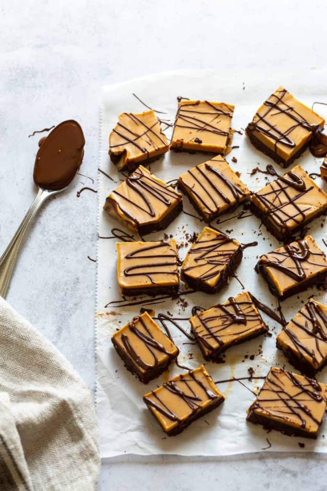

Home
Gluten-Free Peanut Butter Fudge

Description
Peanut Butter Fudge is easy to make, easy to take on the go, and most importantly it's gluten-free!
- 8 Oz Unsweetened Chocolate
- 1/2 Cup Coconut Oil
- 1/4 Cup Peanut Butter
- 2 Tsp Vanilla Extract
- 3 Drops Stevia
- In a medium saucepan over low heat melt the chocolate, coconut oil and peanut butter stirring often. Add sweetener.
- Pour into a 9x9 baking pan lined with parchment paper and place in the refrigerator for at least 3 hours.
- Make the second layer by melting the coconut oil and peanut butter in a medium saucepan over low heat stirring often.
- Pour over the chocolate layer and place in the refrigerator overnight.
- When they are set you can slice them into small pieces. Store in fridge or they will melt.